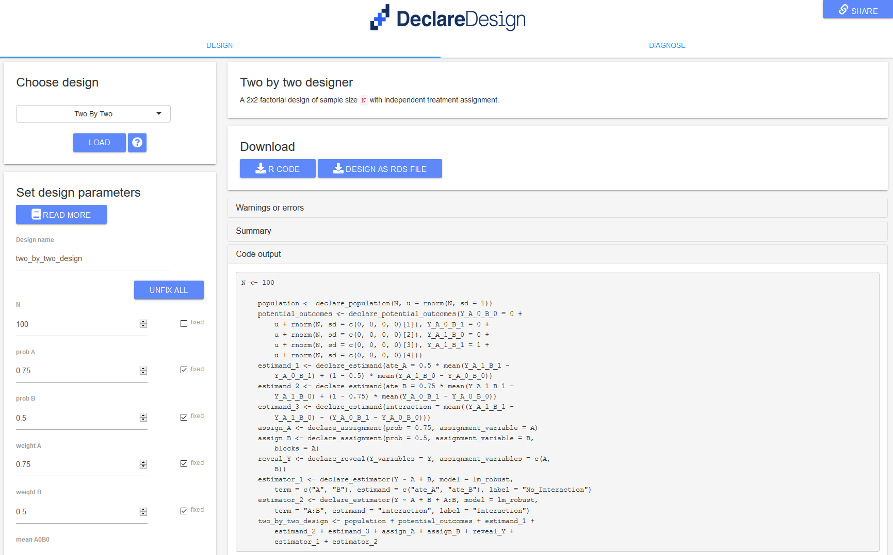
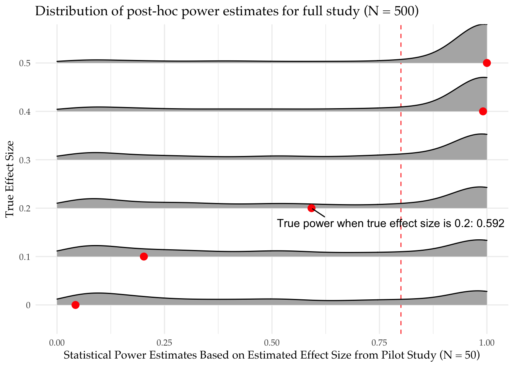
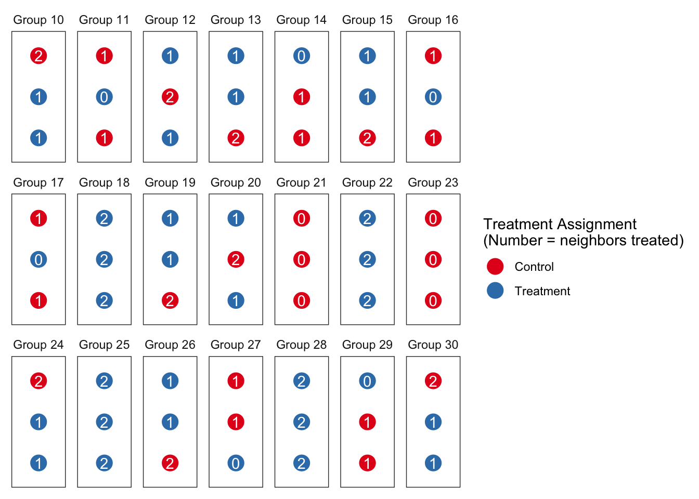

Declare
Design
Getting started
Book
Software
DeclareDesign
fabricatr
randomizr
estimatr
DesignLibrary
DesignWizard
Blog
About
DeclareDesign Blog

Now there is a web interface for declaring and diagnosing research designs
DeclareDesign is a collection of tools to help you “declare” and “diagnose” research designs. In a word, with the DeclareDesign packages you can quickly state the core analysis-relevant…
Jan 8, 2020
Clara Bicalho, Sisi Huang, Markus Konrad
An instrument does not have to be exogenous to be consistent
We often think of an instrumental variable (
\(Z\)
) as a random shock that generates exogenous variation in a treatment of interest
\(X\)
. The randomness of
\(Z\)
lets us…
Feb 19, 2019
Declare Design Team
Some designs have badly posed questions and design diagnosis can alert you to the problem
An obvious requirement of a good research design is that the question it seeks to answer does in fact
have
an answer, at least under plausible models of the world. But we can sometimes get quite far along a research path without being conscious that the questions we ask do not…
Feb 12, 2019
Declare Design Team
Estimating Average Treatment Effects with Ordered Probit: Is it worth it?
We sometimes worry about whether we need to model data generating processes correctly. For example you have ordinal outcome variables, on a five-point Likert scale. How…
Feb 6, 2019
DeclareDesign Team
What can you learn from simulating qualitative inference strategies?
Qualitative process-tracing sometimes seeks to answer “cause of effects” claims using within-case data: how probable is the hypothesis that
\(X\)
did in fact
cause
\(Y\)
?
Fairfield and…
Jan 30, 2019
Declare Design Team

Should a pilot study change your study design decisions?
Data collection is expensive, and we often only get one bite at the apple. In response, we often conduct an inexpensive (and small) pilot test to help better design the…
Jan 23, 2019
Declare Design Team
Use change scores or control for pre-treatment outcomes? Depends on the true data generating process
We’re in an observational study setting in which treatment assignment was not controlled by the researcher. We have pre-treatment data on baseline outcomes and we’d like to…
Jan 15, 2019
DeclareDesign Team
A journal of null results is a flawed fix for a significance filter
Mostly we use design diagnostics to assess issues that arise because of design decisions. But you can also use these tools to examine issues that arise
after
implementation. Here we look at risks from publication bias and illustrate two distinct types of upwards bias…
Jan 8, 2019
DeclareDesign Team
DeclareDesign Holiday Hiatus
We’ll be back on January 7 – Happy New Year!
Dec 20, 2018
DeclareDesign Team
Sometimes you need to cluster standard errors above the level of treatment
In designs in which a treatment is assigned in clusters (e.g. classrooms), it’s usual practice to account for cluster-level correlations when you generate estimates of…
Dec 18, 2018
DeclareDesign Team
Get me a random assignment YESTERDAY
You’re partnering with an education nonprofit and you are planning on running a randomized control trial in 80 classrooms spread across 20 community schools. The request is…
Dec 4, 2018
DeclareDesign Team
Randomization does not justify t-tests. How worried should I be?
Deaton and Cartwright (2017)
provide multiple arguments against claims that randomized trials should be thought of as a kind of gold standard of scientific evidence. One striking argument they make is…
Nov 27, 2018
DeclareDesign Team

Instead of avoiding spillovers, you can model them
Spillovers are often seen as a nuisance that lead researchers into error when estimating effects of interest. In a previous post, we discussed sampling strategies to reduce these risks. A more substantively satisfying approach is to try to study spillovers directly. If we do it right we can remove…
Nov 20, 2018
DeclareDesign Team
What does a p-value tell you about the probability a hypothesis is true?
The humble
\(p\)
-value is much…
Nov 13, 2018
DeclareDesign Team
Common estimators of uncertainty overestimate uncertainty
Random assignment provides a justification not just for estimates of effects but also for estimates of uncertainty about effects. The basic approach, due to Neyman, is to…
Nov 7, 2018
DeclareDesign Team
Cluster randomized trials can be biased when cluster sizes are heterogeneous
In many experiments, random assignment is performed at the level of clusters. Researchers are conscious that in such cases they cannot rely on the usual standard errors and…
Oct 31, 2018
DeclareDesign Team
With great power comes great responsibility
We usually think that the bigger the study the better. And so huge studies often…
Oct 23, 2018
Declare Design Team
How misleading are clustered SEs in designs with few clusters?
Cluster-robust standard errors are known to behave badly with too few clusters. There is a great discussion of this issue by Berk Özler “Beware of…
Oct 16, 2018
DeclareDesign Team
The trouble with ‘controlling for blocks’
In many experiments, different groups of units get assigned to treatment with different probabilities. This can give rise to misleading results unless you properly take…
Oct 9, 2018
Declare Design Team
Improve power using your answer strategy, not just your data strategy
Most power calculators take a small number of inputs: sample size, effect size, and variance. Some also allow for number of blocks or cluster size as well as the overall…
Oct 2, 2018
DeclareDesign Team
Sometimes blocking can reduce your precision
You can often improve the precision of your randomized controlled trial with blocking: first gather similar units together into groups, then run experiments inside each…
Sep 24, 2018
DeclareDesign Team
You can’t speak meaningfully about spillovers without specifying an estimand
A dangerous fact: it is quite possible to talk in a seemingly coherent way about strategies to answer a research question without ever properly specifying what the…
Sep 18, 2018
DeclareDesign Team
How controlling for pretreatment covariates can introduce bias
Consider an observational study looking at the effect of a non-randomly assigned treatment,
\(Z\)
, on an outcome
\(Y\)
. Say you have a pretreatment covariate,
\(X\)
, that is…
Sep 12, 2018
DeclareDesign Team
DeclareDesign: The Blog
Welcome to the
DeclareDesign
blog! We have been working on developing the
DeclareDesign
family of software packages to let researchers easily generate research designs and assess their properties. Our plan over the next six months is to put up weekly blog…
Sep 11, 2018
No matching items